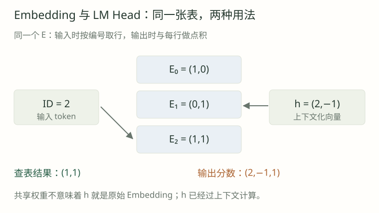

01 · 输入 [2,0] 为什么不是得到两倍向量和零向量？
展开逐步解析
编号是索引，分别选 E[2] 与 E[0]。数值 2 和 0 并不参与语义缩放。本例输出 [1,1] 与 [1,0]。
同一张词表，怎样进入向量空间，又怎样回到词表分数？
设 V=3、D=2，E 的三行为 (1,0)、(0,1)、(1,1)。输入 [2,0] 查得 [(1,1),(1,0)]。

| token ID | E 中的向量 | 用途 |
|---|---|---|
| 0 | [1,0] | 教学单位 0 |
| 1 | [0,1] | 教学单位 1 |
| 2 | [1,1] | 教学单位 2 |
E = torch.tensor([[1., 0.], [0., 1.], [1., 1.]])
ids = torch.tensor([2, 0])
x = F.embedding(ids, E)
# tensor([[1., 1.], [1., 0.]])ID 2 是行索引，不是乘数。查表等价于 one_hot(ids) @ E，但通常无需实际创建 one-hot。
E 是可训练参数，编号大小本身不定义语义距离。
相同 token 初始查表相同；经过上下文与位置计算后，hidden state 可以不同。
最终 h 已经过 Attention、FFN、残差与归一化，并非原始 Embedding 的直接回传。
离散输入 i → E[i] → 多层上下文变换 → hidden h → 词表 logits输入向量和最终隐藏状态都可为 [B,T,D]，但处于不同计算阶段。
若共享输出权重，h=(2,−1) 与 E 三行分别点积，得到 logits (2,−1,1)。
z₀ = (2,-1)·(1,0) = 2
z₁ = (2,-1)·(0,1) = -1
z₂ = (2,-1)·(1,1) = 1
logits = h Eᵀ = [2,-1,1]h = torch.tensor([[2., -1.]])
logits = F.linear(h, E) # 线性层内部乘 E 的转置
prob = logits.softmax(dim=-1)
# 概率约为 [0.7054, 0.0351, 0.2595]h @ E.T 将末维 D 映射为 V；经 softmax 得到概率。最大分数对应候选 0。
不共享时有 E 与 W_out 两份 V×D 参数；共享时输入查表和输出评分使用同一份权重。
embedding = torch.nn.Embedding(3, 2)
head = torch.nn.Linear(2, 3, bias=False)
head.weight = embedding.weight
assert head.weight is embedding.weight共享要求同一个 Parameter，不是初始化时复制数值。TinyLM 直接调用 F.linear(h, embedding.weight)。
输入与输出路径的梯度在共享参数上相加。共享减少参数，但并不保证任务质量提升。
V=50000、D=1024 时，一张表有 51,200,000 个参数；每项2字节约97.66 MiB。训练还需梯度、优化器状态等空间。
一张表参数量 = V × D
一张表权重字节数 = V × D × 每元素字节数
本例：50000 × 1024 × 2 / 2²⁰ ≈ 97.66 MiB大词表可能缩短序列，却增加权重和 [B,T,V] logits 的存储与计算。
先手算查表与点积，再检查参数身份和一次反向传播。
完整 softmax 的输出梯度可涉及所有词表行；输入路径只访问当前出现的 ID。
调整手工向量 h，观察点积如何改变候选概率。
先作答，再展开解析。
编号是索引，分别选 E[2] 与 E[0]。数值 2 和 0 并不参与语义缩放。本例输出 [1,1] 与 [1,0]。
2×1+(-1)×1=1，它是 ID 2 的未归一化分数。要与其他候选一起做 softmax，才能得到概率。
h 的末维是 D，要对每一行候选向量点积，因此矩阵乘法是 [B,T,D] @ [D,V]，结果 [B,T,V]。
不是。两个独立参数即使初值一样，梯度和优化器更新仍可分离；真正共享要引用同一参数对象或在计算中直接使用同一权重。
不是。输入查表与输出打分都使用同一参数，反向传播时各路径贡献累加；具体梯度还依赖本次输入和损失。
不能。它仅是一张表的两字节权重估计，不含其他层、激活、梯度、优化器状态、临时张量与运行时开销。